생산자동화산업기사 (2014-05-25 기출문제)
1과목: 기계가공법 및 안전관리
1. 빌트업 에지(built-up edge)의 발생을 방지하는 대책으로 옳은 것은?
- 바이트의 윗면 경사각을 작게 한다.
- 절삭깊이, 이송속도를 크게 한다.
- 피가공물과 친화력이 많은 공구 재료를 선택한다.
- 절삭속도를 높이고, 절삭유를 사용한다.
(정답률: 71%)

2. 숏 피닝(shot peening)과 관계없는 것은?
- 금속 표면 경도를 증가시킨다.
- 피로 한도를 높여준다.
- 표면 광택을 증가시킨다.
- 기계적 성질을 증가시킨다.
(정답률: 53%)
3. 범용 밀링에서 원주를 10° 30′ 분할할 때 맞는 것은?
- 분할판 15구멍열에서 1회전과 3구멍씩 이동
- 분할판 18구멍열에서 1회전과 3구멍씩 이동
- 분할판 21구멍열에서 1회전과 4구멍씩 이동
- 분할판 33구멍열에서 1회전과 4구멍씩 이동
(정답률: 72%)
4. 연삭에 관한 안전사항 중 틀린 것은?
- 받침대와 숫돌은 5mm 이하로 유지해야 한다.
- 숫돌바퀴는 제조 후 사용할 원주 속도의 1.5∼2배 정도의 안전검사를 한다.
- 연삭숫돌 측면에 연삭하지 않는다.
- 연삭숫돌을 고정 후 3분 이상 공회전 시킨 후 작업을 한다.
(정답률: 64%)
5. 선반작업에서 절삭저항이 가장 적은 분력은?
- 내 분력
- 이송 분력
- 주 분력
- 배 분력
(정답률: 69%)
6. 전해연마 가공의 특징이 아닌 것은?
- 연마량이 적어 깊은 홈은 제거가 되지 않으며 모서리가 라운드된다.
- 가공면에 방향성이 없다.
- 연질의 금속은 연마할 수 없다.
- 복잡한 형상의 공작물 연마도 가능하다.
(정답률: 65%)
7. 표면 거칠기 표기방법 중 산술평균 거칠기를 표기하는 기호는?
- Rp
- Rv
- Rz
- Ra
(정답률: 77%)
8. NC공작기계의 특징 중 거리가 가장 먼 것은?
- 다품종 소량 생산가공에 적합하다.
- 가공조건을 일정하게 유지할 수 있다.
- 공구가 표준화되어 공구수를 증가시킬 수 있다.
- 복잡한 형상의 부품가공 능률화가 가능하다.
(정답률: 64%)
9. 측정기에서 읽을 수 있는 측정값의 범위를 무엇이라 하는가?
- 지시 범위
- 지시 한계
- 측정 범위
- 측정 한계
(정답률: 83%)
10. 원형의 측정물을 V 블록위에 올려놓은 뒤 회전하였더니 다이얼 게이지의 눈금에 0.5mm의 차이가 있었다면 그 진원도는 얼마인가?
- 0.125mm
- 0.25mm
- 0.5mm
- 1.0mm
(정답률: 70%)
11. 대표적인 수평식 보링머신은 구조에 따라 몇 가지 형으로 분류되는데 다음 중 맞지 않는 것은?
- 플로어형(floor type)
- 플레이너형(planer type)
- 베드형(bed type)
- 테이블형(table type)
(정답률: 50%)
12. NC밀링 머신의 활용에서 장점을 열거하였다. 타당성이 없는 것은?
- 작업자의 신체상 또는 기능상 의존도가 적으므로 생산량의 안정을 기할 수 있다.
- 기계의 운전에는 고도의 숙련자를 요하지 않으며 한사람이 몇 대를 조작 할 수 있다.
- 실제 가동률을 상승시켜 능률을 향상시킨다.
- 적은 공구로 광범위한 절삭을 할 수 있고 공구의 수명이 단축되어 공구비가 증가한다.
(정답률: 75%)
13. 바이트 중 날과 자루(shank)가 같은 재질로 만든 것은?
- 스로어웨이 바이트
- 클램프 바이트
- 팁 바이트
- 단체 바이트
(정답률: 67%)
14. 기계의 안전장치에 속하지 않는 것은?
- 리미트 스위치(limit switch)
- 방책(防柵)
- 초음파 센서
- 헬멧(helmet)
(정답률: 75%)
15. 연삭에서 원주속도를 V(m/min), 숫돌바퀴의 지름을 d(mm)이라면, 숫돌바퀴의 회전수(N)을 구하는 식은?
- N = 1000d / πV (rpm)
- N = 1000V / πd (rpm)
- N = πV / 1000d (rpm)
- N = πd / 1000V (rpm)
(정답률: 83%)
16. 각도 측정을 할 수 있는 사인바(sine bar)의 설명으로 틀린 것은?
- 정밀한 각도측정을 하기 위해서는 평면도가 높은 평면에서 사용해야 한다.
- 롤러의 중심거리는 보통 100mm, 200mm로 만든다.
- 45°이상의 큰 각도를 측정하는데 유리하다.
- 사인바는 길이를 측정하여 직각 삼각형의 삼각함수를 이용한 계산에 의하여 임의각의 측정 또는 임의각을 만드는 기구이다.
(정답률: 77%)
17. 공구가 회전하고 공작물은 고정되어 절삭하는 공작기계는?
- 선반(Lathe)
- 밀링 머신(Milling)
- 브로칭 머신(Broaching)
- 형삭기(Shaping)
(정답률: 75%)
18. 지름 50mm, 날수 10개인 페이스커터로 밀링 가공할 때 주축의 회전수가 300rpm, 이송속도가 매 분당 1500mm였다. 이때의 커터 날 하나 당 이송량(mm)은?
- 0.5
- 1
- 1.5
- 2
(정답률: 53%)
19. 선반작업 시 절삭속도 결정의 조건 중 거리가 가장 먼 것은?
- 가공물의 재질
- 바이트의 재질
- 절삭유제의 사용유무
- 칼럼의 강도
(정답률: 69%)
20. 연삭숫돌의 입자 중 천연입자가 아닌 것은?]
- 석영
- 코런덤
- 다이아몬드
- 알루미나
(정답률: 70%)
2과목: 기계제도 및 기초공학
21. 구름 베어링의 기호 중 “NF 307” 베어링의 안지름은 몇 mm인가?
- 7
- 10
- 30
- 35
(정답률: 71%)
22. 그림은 어느 기어를 도시한 것인가?
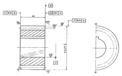
- 스퍼 기어
- 헬리컬 기어
- 직선베벨 기어
- 웜 기어
(정답률: 64%)
23. KS 재로기호 중 드로잉 용 냉간압연 강판 및 강재에 해당하는 것은?
- SCCD
- SPCC
- SPHD
- SPCD
(정답률: 65%)
24. 어떤 치수가
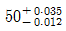
일 때 치수 공차는 얼마인가?- 0.013
- 0.023
- 0.047
- 0.012
(정답률: 87%)
25. 도면과 같은 물체의 비중이 8 일 때 이 물체의 질량은 약 몇 kg 인가?
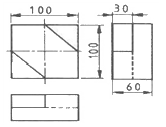
- 3.5
- 4.2
- 4.8
- 0.012
(정답률: 55%)
26. 대칭인 물체의 중심선을 기준으로 내부모양과 외부모양을 동시에 표시하여 나타내는 단면도는?
- 부분 단면도
- 한쪽 단면도
- 조합에 의한 단면도
- 회전도시 단면도
(정답률: 62%)
27. 구멍 기준식(H7) 끼워 맞춤에서 조립되는 축의 끼워 맞춤 공차가 다음과 같을 때 억지 끼워 맞춤에 해당되는 것은?
- p6
- h6
- g6
- f6
(정답률: 83%)
28. 치수 보조 기호의 설명으로 틀린 것은?
- R15 : 반지름 15
- t15 : 판의 두께 15
- (15) : 비례척이 아닌 치수 15
- SR15 : 구의 반지름 15
(정답률: 85%)
29. 다음 나사 기호 중 관용나사의 기호가 아닌 것은?
- TW
- PT
- R
- PS
(정답률: 65%)
30. 다음과 같이 표면의 결 도시기호가 나타났을 때, 이에 대한 해석으로 틀린 것은?
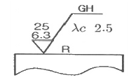
- 가공방법은 연삭가공
- 컷오프 값은 2.5mm
- 거칠기 하한은 6.3μm
- 가공에 의한 컷의 줄무늬가 기호를 기입한 면의 중심에 대하여 거의 방사 모양
(정답률: 65%)
31. 저항값 12[Ω]±5% 에 해당하는 탄소저항기의 색띠로 옳은 것은?
- 갈색 적색 흑색 은색
- 흑색 갈색 흑색 금색
- 갈색 적색 흑색 금색
- 흑색 갈색 흑색 은색
(정답률: 68%)
32. 휨과 비틀림이 동시에 작용하는 축에서 휨 모멘트를 M, 비틀림 모멘트를 T 라 할 때, 상당 휨 모멘트(Me)와 상당 비틀림 모멘트(Te)를 구하는 식은?
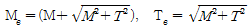
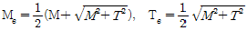
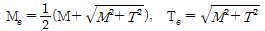
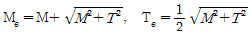
(정답률: 56%)
33. 전극이 수시로 바뀌는 교류의 주파수를 나타내는 식은? (단, 회전하는 코일의 각속도는 ω 이다.)
- π / 2ω
- 2ω / π
- 2π / ω
- ω / 2π
(정답률: 52%)
34. 질량 8kg 의 물체가 힘을 받아 3.2m/s2의 가속도가 발생했다면 물체가 받은 힘은?
- 25.6 N
- 25.6 kg
- 2.5 N
- 2.5kg/m·s2
(정답률: 69%)
35. 다음 중 SI 기본단위인 물리량은?
- 속도
- 가속도
- 중량
- 질량
(정답률: 79%)
36. 철판에 1.5㎝/s 로 자동 용접할 수 있는 잠호 용접기가 있다. 같은 철판을 2분 동안 용접한 거리는?
- 3cm
- 45cm
- 80cm
- 180cm
(정답률: 82%)
37. 다음 그래프는 굵기와 길이가 같은 두 종류의 금속선 A와 B의 전류와 전압사이의 관계를 나타낸 것이다. 이 두 금속선의 비저항의 비 Pa : Pb 는 얼마인가?
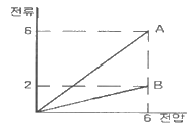
- 1 : 1
- 1 : 3
- 1 : 5
- 1 : 7
(정답률: 88%)
38. 지름이 D이고, 반지름이 R 인 구(球)의 체적을 구하는 식으로 옳은 것은?
- (4/3)πD3
- (3/4)πR3
- (1/3)πR3
- (1/6)πD3
(정답률: 57%)
39. 하중의 크기와 방향이 주기적으로 변화하는 하중은?
- 반복하중
- 교번하중
- 충격하중
- 이동하중
(정답률: 81%)
40. 힘의 모멘트 단위는 1N·m 인데 이것을 일의 단위인 J 로 표시하면 얼마인가?
- 0.1 J
- 0.7 J
- 1 J
- 1.5 J
(정답률: 84%)
3과목: 자동제어
41. PLC 구성 시 출력신호와 관계가 없는 것은?
- 표시등
- 부저
- 구동부
- 광센서
(정답률: 81%)
42. 다음 회로에서 시정수(time constant)는?
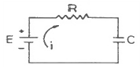
- RC
- C/R
- R/C
- 1/(RC)
(정답률: 67%)
43. 다음 중 서보전동기가 갖추어야 할 특성이 아닌 것은?
- 회전자의 관성이 클 것
- 기동토크가 클 것
- 정지 및 역전의 운전이 가능할 것
- 속응성이 충분히 높을 것
(정답률: 76%)
44. PLC의 래더 다이어그램 명령어로서 적당하지 않은 것은?
- 릴레이 래더 명령
- 연산 명령
- 데이터처리 명령
- 어셈블리 명령
(정답률: 68%)
45. PPI8255 인터페이스 칩의 기본 입·출력 동작에서 표에서와 같이 핀번호 8번인 A0와 핀번호 9번인 A1의 신호에 대한 설명으로서 옳은 것은?
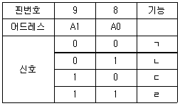
- “ㄱ" 항은 각 포트의 기능을 결정하는 콘트롤 신호이다.
- “ㄴ" 항은 포트 A에 입력 또는 출력이 가능하게 한다.
- “ㄷ" 항은 포트 C에 입력 또는 출력이 가능하게 한다.
- “ㄹ" 항은 포트 B에 입력 또는 출력이 가능하게 한다.
(정답률: 55%)
46. 입력과 출력을 비교하는 장치가 필요한 제어로 맞는 것은?
- 시퀀스 제어
- 되먹임 제어
- ON-OFF 제어
- OPEN LOOP 제어
(정답률: 85%)
47. 서보기구에서 신호종류에 따른 분류가 아닌 것은?
- 유압식
- 공기압식
- 전기식
- 기계식
(정답률: 77%)
48. 다음 유압장치의 특징을 설명한 것 중 틀린 것은?
- 자동 제어가 가능하다.
- 입력에 대한 출력의 응답이 빠르다.
- 무단변속이 불가능하다.
- 원격 제어가 가능하다.
(정답률: 76%)
49. 다음 중 개회로(open loop)제어계의 응용으로 볼 수 없는 것은?
- 교통 신호 장치
- 물류공장의 컨베이어
- 커피 자동 판매기
- NC 선반의 위치제어
(정답률: 79%)
50. 다음 중 제어계의 성능으로서 3가지 중요한 특성값이 아닌 것은?
- 정상편차
- 속응성
- 결합계수
- 안정도
(정답률: 67%)
51. 단위 피드백 시스템의 전방 경로 함수가
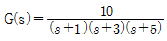
일 때 스탭 입력 us(t)=5를 인가하였다면, 정상상태 오차는?- 0
- 3
- 5
- ∞
(정답률: 50%)
52. 4013을 이용하여 엔코더의 신호로 회전방향을 알 수 있는 그림과 같은 D 플립플롭회로에서 ⓐ, ⓑ, ⓒ를 옳게 짝지은 것은?
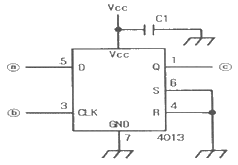
- ⓐ A상, ⓑ Z상, ⓒ 방향출력
- ⓐ B상, ⓑ Z상, ⓒ 방향출력
- ⓐ Z상, ⓑ A상, ⓒ 방향출력
- ⓐ A상, ⓑ B상, ⓒ 방향출력
(정답률: 51%)
53. 다음 중 PLC의 자가진단 기능과 거리가 먼 것은?
- 메모리 엑세스 타임 체크 기능
- 배터리 전압저하 체크 기능
- Code Error 및 Syntax Check 기능
- Watch Dog Timer 기능
(정답률: 48%)
54. 계자 코일에 전류를 흘려 줌으로써 전자석을 만들어 밸브를 여닫는 밸브는?
- 전동밸브
- 체크밸브
- 전자밸브
- 수동밸브
(정답률: 86%)
55. 단위 임펄스 함수의 라플라스 변환은?
- 0
- 1
- 1/s
- 1/s2
(정답률: 41%)
56. 용량이 같은 단단 펌프 2개를 1개의 본체 내에 직렬로 연결시킨 것으로 고압으로 대 출력이 요구되는 곳에 사용되는 펌프는?
- 2단 베인 펌프
- 복합 펌프
- 2단 복합 펌프
- 단단 베인 펌프
(정답률: 71%)
57. 다음 중 발전기 출력단자 전압을 부하에 관계없이 일정하게 유지하는 장치가 있을 경우 이는 어디에 속하는가?
- 서보 기구
- 공정 제어
- 비율 제어
- 자동 조정
(정답률: 70%)
58. 생산 공정이나 기계장치 등을 자동화 하였을 때 설명으로 옳지 않은 것은?
- 생산속도 증가
- 제품 풀질의 균일화
- 인건비 감소
- 생산 설비의 수명 감소
(정답률: 88%)
59. 그림의 연산요소는 분압기 회로이다. 이에 대한 연산방정식은?
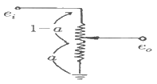
- eo = (1-a) · ei
- eo = 1-a · ei
- eo = ei - a
- eo = a · ei
(정답률: 39%)
60. 그림과 같은 기계시스템에서를 f(t)를 입력으로 하고 x(t)출력으로 하였을 때의 전달함수는?
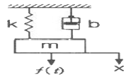
- ms2 + bs + k
- 1 / (ms2 + bs + k)
- s / (ms2 + bs + k)
- k / (ms2 + bs + k)
(정답률: 49%)
4과목: 메카트로닉스
61. 다음 논리함수를 최소화하면?
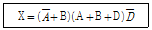
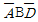
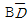
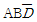
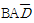
(정답률: 59%)
62. 전기에너지와 열에너지 사이의 변환관계를 결정하는 법칙은?
- 페러데이 법칙
- 오옴의 법칙
- 키르히호프의 법칙
- 주울의 법칙
(정답률: 68%)
63. RLC 직렬회로의 임피던스 Z 는?
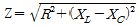
- Z = R + XL + XC
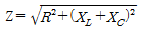
- Z = R + XL - XC
(정답률: 53%)
64. 10진법의 수 0에서 9를 2진법으로 표현하기 위한 최소 자리수는?
- 2
- 4
- 6
- 8
(정답률: 83%)
65. 컴퓨터에서 2의 보수를 사용하지 않는 경우는?
- 뺄셈 연산
- 곱셈 연산
- 나눗셈 연산
- 음수 표현
(정답률: 59%)
66. 볼트, 핀, 자동차 부품 등을 대량으로 생산할 때 가장 적합한 선반은?
- 공구선반
- 탁상선반
- 자동선반
- 정면선반
(정답률: 69%)
67. 다음 그림의 논리식에서 출력 y 값은?
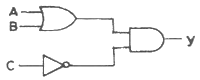
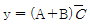
- y = (A+B)(A+C)
- y = (A+B)(C+B)
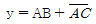
(정답률: 85%)
68. 저항 R[Ω]을 다음 그림과 같이 접속했을 때, 합성저항은 몇 [Ω]인가?
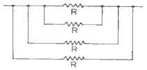
- 4R
- (3/4)R
- 4/R
- R/4
(정답률: 66%)
69. 유도형 근접 스위치로 검출할 수 있는 재질은 어느 것인가?
- 유리
- 목재
- 금속
- PVC
(정답률: 81%)
70. 정현파 교류의 실효값이 100[V]이고 주파수가 60[Hz]인 경우 전압의 순시값은?
- e=141.4sin377t
- e=100sin377t
- e=141.4sin120t
- e=100sin120t
(정답률: 59%)
71. 현재 CPU로 읽어올 명령이 들어 있는 메모리의 주소가 들어 있는 곳은?
- 명령레지스터
- 프로그램 카운터
- 누산기
- 범용레지스터
(정답률: 58%)
72. CNC공작기계에 관한 설명으로 옳지 않은 것은?
- 구동모터의 회전에 따라 기계 본체의 테이블이나 주축헤드가 동작하는 기구를 서보기구라고 한다.
- CNC공작기계의 서보기구에서는 동작의 안정성과 응답성이 대단히 중요하다.
- 서보기구의 제어방식 중 개방회로 방식은 간단하고 되먹임 제어가 가능하므로, 정확한 위치제어가 가능하다.
- CNC공작기계에서는 정밀도 높은 위치제어를 위해서 반 폐쇄회로 방식과 폐쇄회로 방식을 많이 사용한다.
(정답률: 75%)
73. 동일한 피측정물과 버니어 캘리퍼스를 가지고 숙련공과 비숙련공이 내경을 측정하였더니 두 사람의 측정값이 달랐다. 이런 오차를 무엇이라 하는가?
- 개인오차
- 기기오차
- 외부조건에 의한 오차
- 우연오차
(정답률: 87%)
74. 검출 방법에서 접촉식 스위치로 맞는 것은?
- 근접 스위치
- 리밋 스위치
- 광전 스위치
- 초음파 스위치
(정답률: 84%)
75. 빛에 의해 검출 되는 스위치로서 투광기와 수광기가 있는 스위치는?
- 용량형 스위치
- 광전 스위치
- 유도형 스위치
- 리드 스위치
(정답률: 87%)
76. 다음 중 일반적으로 브러시 교환이 필요한 서보 모터는?
- 스테핑 모터
- DC 서보모터
- 동기형 AC 서보모터
- 유도기형 AC 서보모터
(정답률: 71%)
77. 다음 그림과 같은 구조의 가공 시스템은 무엇인가?
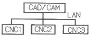
- CIMS
- DNC
- FMC
- FMS
(정답률: 70%)
78. 로봇 팔의 구동 뿐만 아니라 기계의 위치, 속도, 가속도 등의 제어를 필요로 하는 기계구동에 널리 사용되고 있는 제어는?
- 공정 제어
- 프로세스 제어
- 서보 제어
- 시퀀스 제어
(정답률: 80%)
79. 마이크로프로세서가 외부의 RAM, ROM 또는 주변 장치와 연결되기 위해 사용하는 버스에 해당하지 않는 것은?
- 데이터 버스
- 주소 버스
- 제어 버스
- 내부 버스
(정답률: 58%)
80. 스테핑 모터의 동작과 관련된 설명으로 틀린 것은?
- 구동 회로에 주어지는 입력펄스 1개에 대해 소정의 각도만큼 회전시키고, 그 이상 입력이 없는 경우는 정지위치를 유지한다.
- 회전각도는 입력 펄스의 수에 반비례 한다.
- 회전속도는 입력 펄스의 주파수에 비례한다.
- 펄스를 부여하는 방식에 따라 급속하고 빈번하게 기동, 정지가 가능하다
(정답률: 64%)